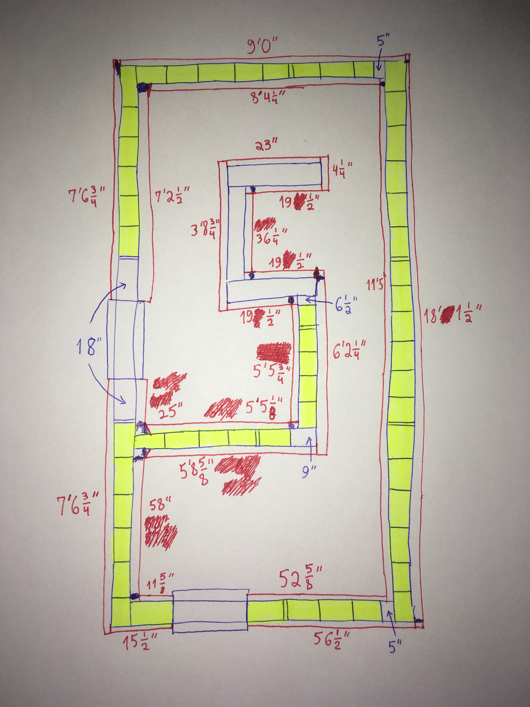
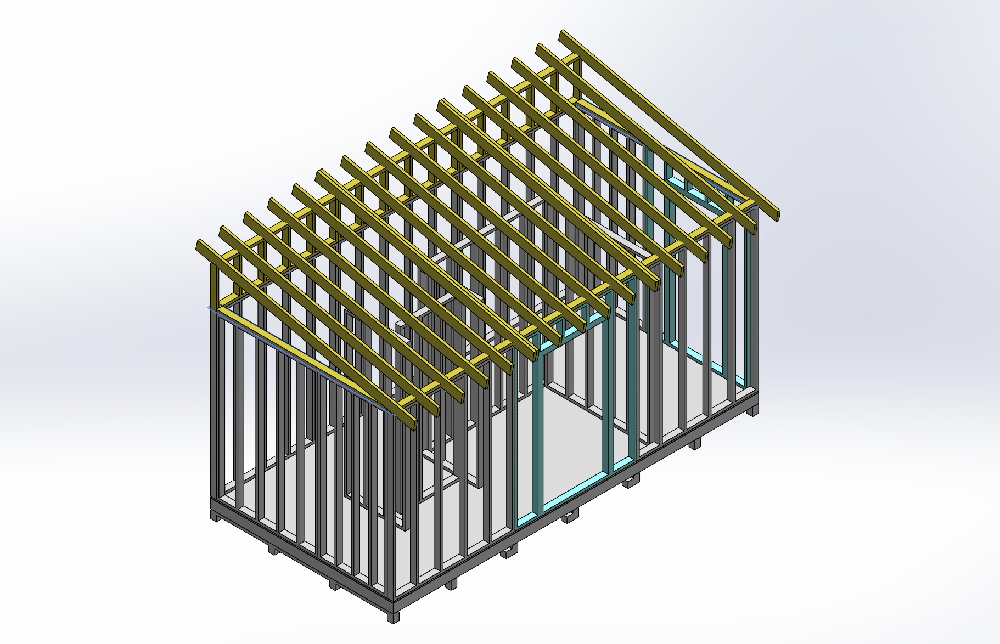
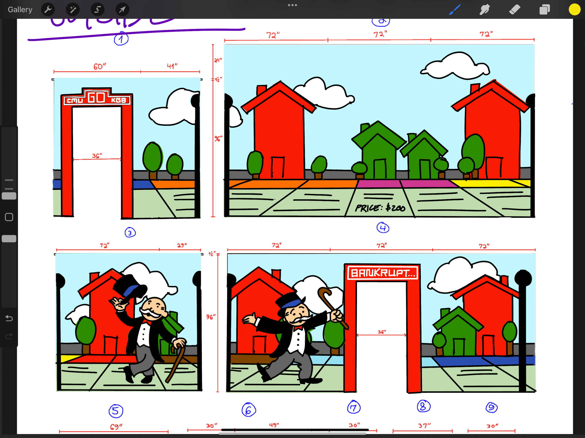
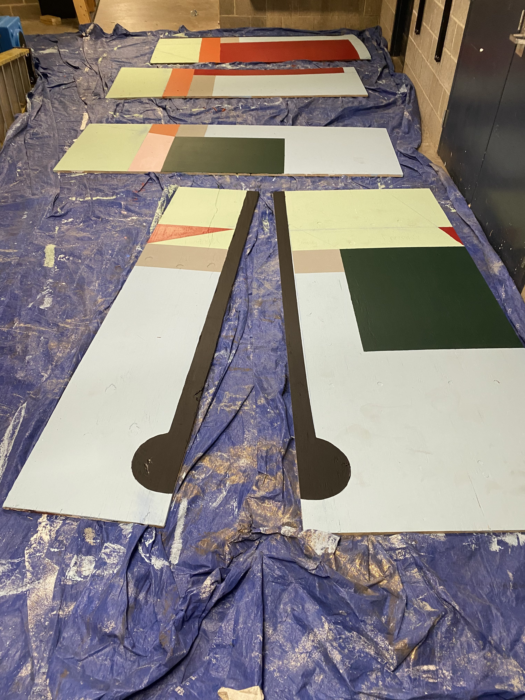
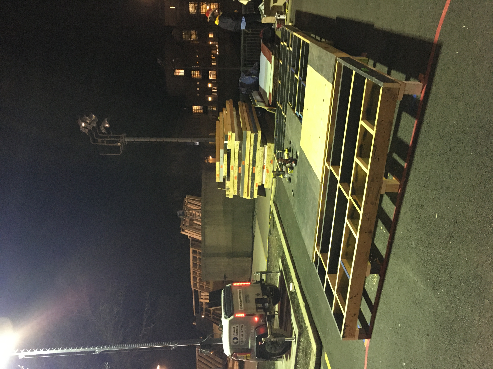
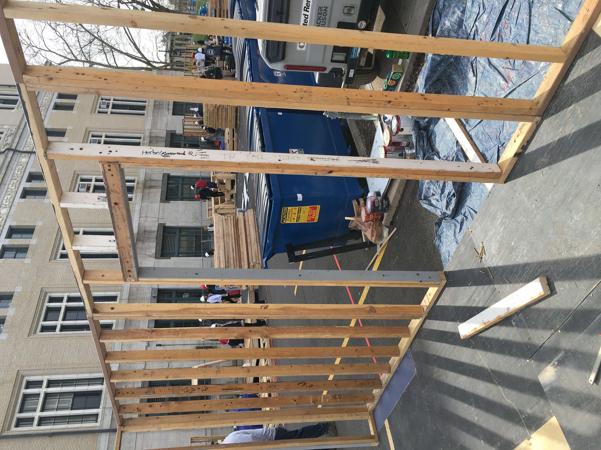
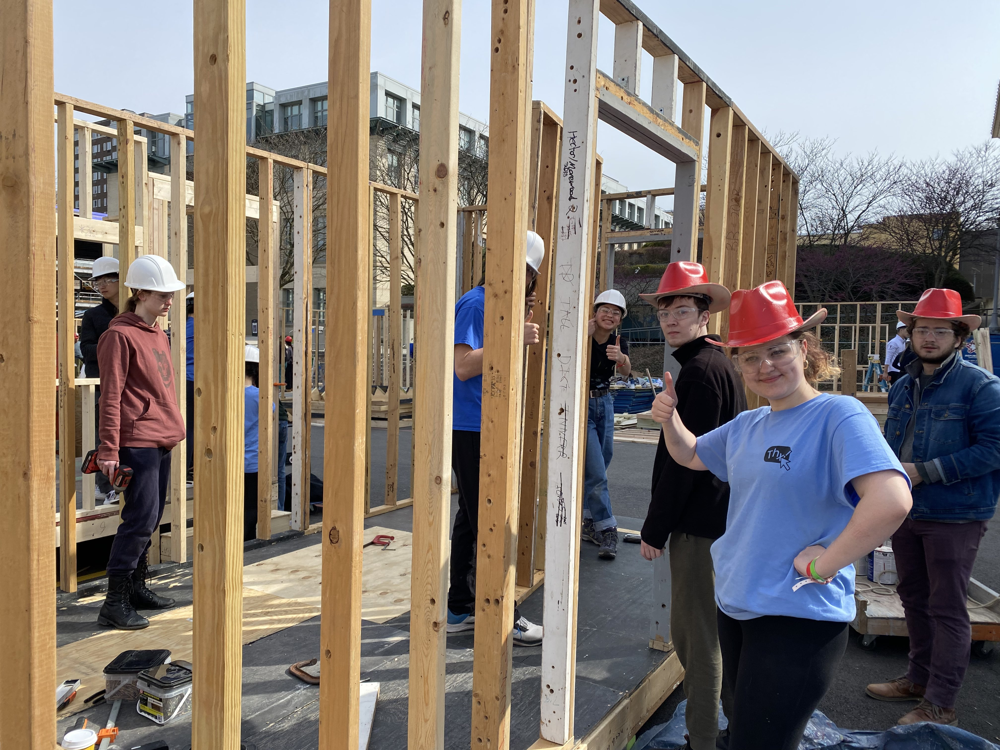
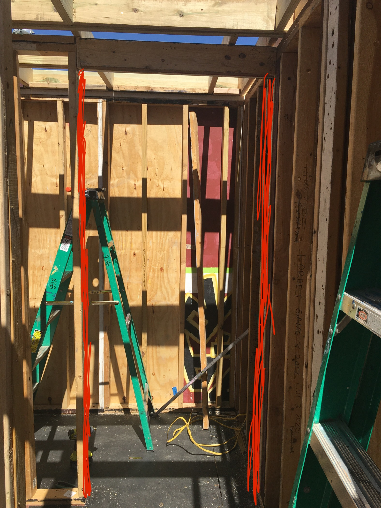
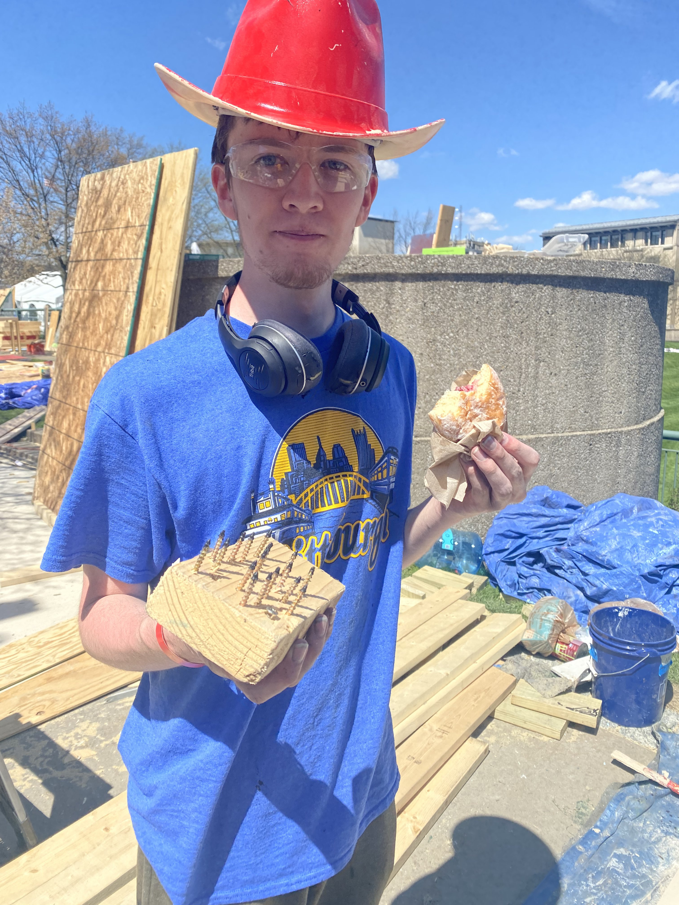
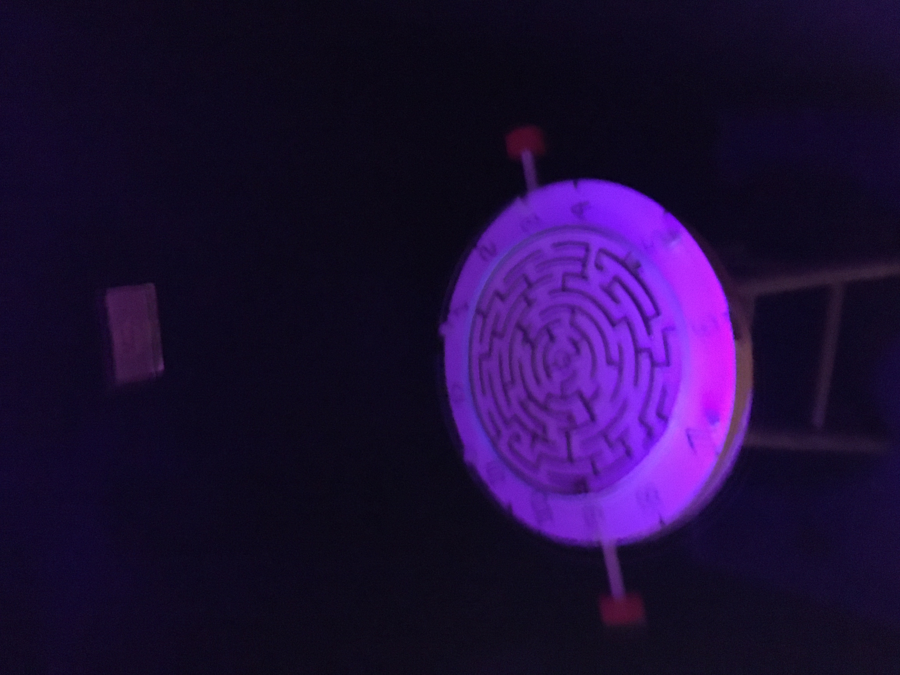

Marble Maze Booth Game
Every year, our school hosts a celebration known as Spring Carnival. For this event, many clubs build “booths”: temporary wooden structures themed around some pop culture subject that carnival‑goers can walk through. For my sophomore year, I joined my club’s booth effort as a booth chair, responsible for the construction of our booth. That year, our club chose a parody of Monopoly as the theme.
Despite having six booth chairs and solid funding for materials, the build process was always a race against time. From December to April we held bi‑weekly builds, prepping the booth for assembly during “build week” right before Carnival. We had to create plans for structure (CAD models), wiring, and game design, all of which had to be approved by the Spring Carnival Committee (SCC) in multiple stages throughout the year.



A lot of work went into reclaiming and re‑using materials from previous years. We prepped all the wall studs for assembly, re‑cut and re‑assembled wall sections to fit the current design, and took inventory of the existing inner and outer wall ply. Then we cut everything to size and primed and painted each panel with the booth’s decorations. On top of that, we rebuilt the floor and ceiling, re‑cut leveling blocks, bought new OSB and plywood for the floor, ceiling, and walls, and handled waterproofing—since it often rains during Carnival.



When build week arrived, all of us booth chairs spent the next week working on and directing construction of the booth itself: assembling the leveling blocks, floor, floor OSB, wall studs, inner and outer wall ply, top runners, ceiling studs, inner ceiling ply, outer roof ply, waterproofing, electrical, painting—the whole stack. The work was physically demanding, but the leadership side was just as challenging. Each chair had to direct other club members so everything got done efficiently, and SCC inspectors made periodic checks to ensure the booth met strict building codes.






Each booth chair was given a different role based on what needed to get done. To my
delight, I was given the role of game chair. I wanted to build a simple marble maze game
for the booth, but between classes and build sessions I kept putting off its
construction. So, after the last day of build week, I went home and spent the
entire night into the morning frantically building the marble maze. Luckily, I was able to laser‑cut
the maze walls prior, but I had to manually cut out the rest with a box cutter.
It ended up turning out decent, though by the end of carnival it had been smashed to bits by the kids that played with it.
